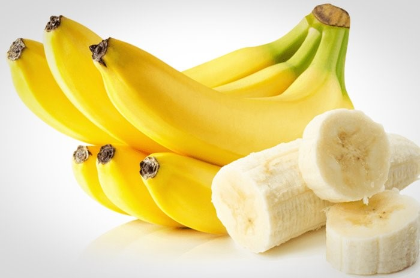

tentangbuah.com
Pisang
Pisang adalah nama umum yang diberikan pada tumbuhan terna raksasa berdaun besar memanjang dari suku Musaceae.
Beberapa jenisnya (Musa acuminata, M. balbisiana, dan M. ×paradisiaca) menghasilkan buah konsumsi yang dinamakan
sama. Buah ini tersusun dalam tandan dengan kelompok-kelompok tersusun menjari yang disebut sisir.
Hampir semua buah pisang memiliki kulit berwarna kuning ketika matang, meskipun ada beberapa yang berwarna jingga,
merah, hijau, ungu, atau bahkan hampir hitam. Buah pisang sebagai bahan pangan merupakan sumber energi (karbohidrat)
dan mineral, terutama kalium.
Perlu disadari, istilah "pisang" juga dipakai untuk sejumlah jenis yang tidak menghasilkan buah konsumsi,
seperti pisang abaka, pisang hias, dan pisang kipas
Khasiat Pisang
- Pisang punya banyak serat, antioksidan dan vitamin yang baik bagi tubuh
- Pisang memiliki nutrisi yang menyeimbangkan gula darah
- Pisang bisa meningkatkan kesehatan pencernaan
- Pisang dapat membantu menurunkan berat badan
- Pisang mendukung kesehatan jantung
- Pisang juga bisa mencegah asma
- Pisang dapat meningkatkan kesehatan ginjal
- Pisang bermanfaat untuk menjaga daya ingat dan meningkatkan suasana hati
Daftar Umum Harga
| Jenis Pisang | Harga Per-Sisir | |
|---|---|---|
| Pisang Raja | 15.000 | |
| Pisang Ambon | 40.000 | |
| Pisang Kepok | 30.000 | |
| Pisang Susu | 10.000 | |
| Pisang Mas | 17.000 | |